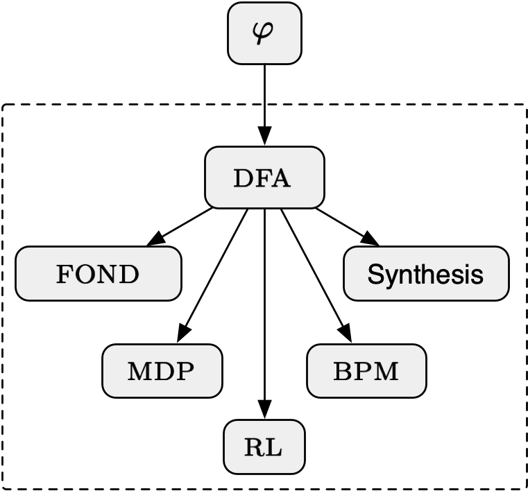

Temporal logics, such as Linear Temporal Logic (LTL), are widely adopted as a logical specification language in Formal
Methods. They are also getting increasing attention from the AI Community. In AI, however, there is often a need to
interpret such logics over finite traces, rather than the traditional infinite-trace interpretation. This is evident,
for instance, in Planning and Business Process Management. An important computational feature of working with finite
traces is that it allows one to use standard finite-state automata to model and reason, rather than the more complex
omega-automata used for infinite traces. This is a great simplification that has already had a significant impact on
many areas of AI and CS.

This symposium, part of the AAAI'23 Spring Symposium Series,
aims to bring together researchers working with temporal logics on finite traces, in basic research and applications,
in order to foster a common space to discuss current results and future directions and to facilitate the emergence of
teams working across different areas.